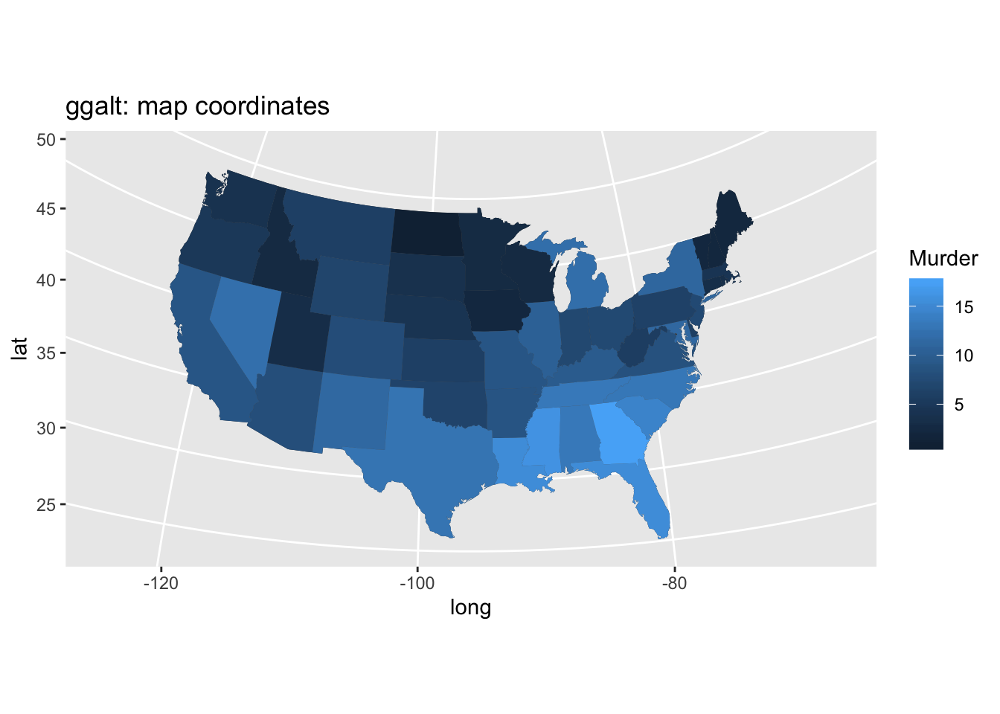
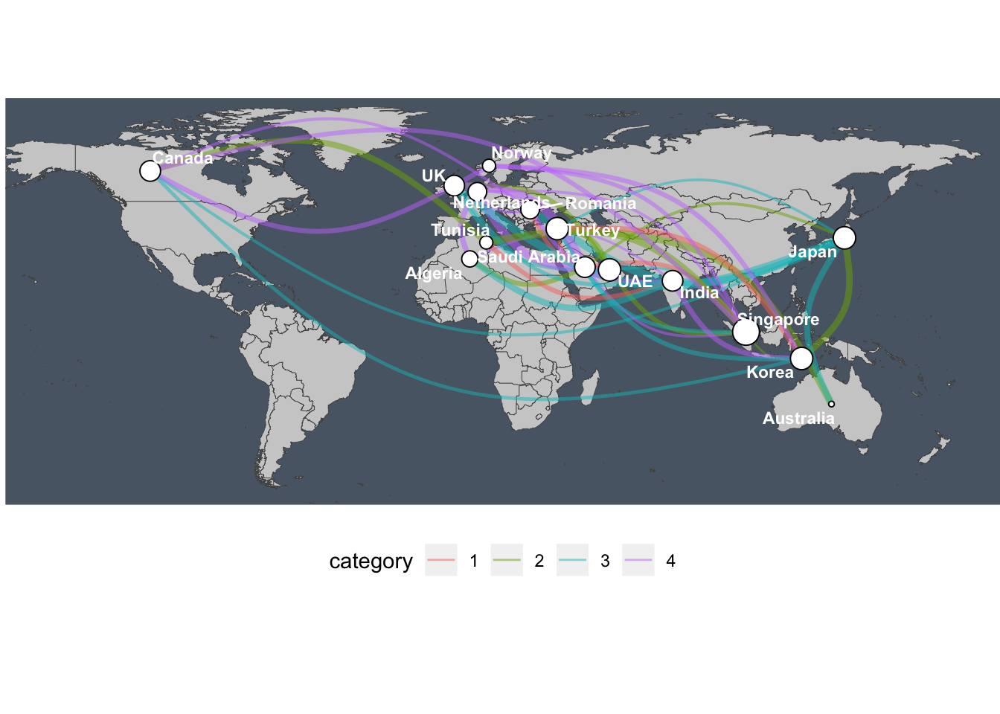

Chapter 8 Connection–maps and network plots
library(tidyverse)
library(stringr)
library(viridis)
library(ggalt)
rm(list=ls())
Minard migration map
8.1 Maps
8.1.1 Choropleth
crimes.df <- data.frame(state = tolower(rownames(USArrests)), USArrests)
crimes.l.df <- gather(crimes.df, key = type, value = rate, -state)
states_map <- map_data("state")
ggplot() +
geom_cartogram(data=states_map, aes(long, lat, map_id = region), map=states_map) +
geom_cartogram(data=crimes.df, aes(fill = Murder, map_id = state), map=states_map) +
coord_map("polyconic")+
labs(title = "ggalt: map coordinates")
ggplot() +
geom_cartogram( data=states_map, aes(long, lat, map_id=region), map = states_map) +
geom_cartogram(data=crimes.l.df, aes(fill = rate, map_id=state), map = states_map) +
coord_map("polyconic") +
facet_wrap( ~ type) +
labs(title = "ggalt: map coordinates")
ggplot() +
geom_cartogram( data=states_map, aes(long, lat, map_id=region), map = states_map) +
geom_cartogram(data=crimes.l.df, aes(fill = rate, map_id=state), map = states_map) +
coord_map("polyconic") +
facet_wrap( ~ type) +
labs(title = "ggalt: map coordinates") +
theme_void()
8.1.2 County map
Based on example: https://cran.r-project.org/web/packages/viridis/vignettes/intro-to-viridis.html
rm(list=ls())
# TODO replace with poverty or health outcomes data
## Clean data
# https://www.ers.usda.gov/data-products/county-level-data-sets/download-data/
poverty.df = read_csv("data/CountyPoverty/Poverty.csv")
names(poverty.df)[1:3] = c("id", "state", "name")
names(poverty.df)[11] = "rate"
poverty.df$county = str_replace(poverty.df$name, " County", "")
poverty.df$county = str_replace(poverty.df$county, " Parish", "")
poverty.df$county = tolower(poverty.df$county)
unemp.df = read_csv("http://datasets.flowingdata.com/unemployment09.csv")
names(unemp.df) = c("id", "state_fips", "county_fips", "name", "year",
"--", "---", "---", "rate")
unemp.df$county = tolower(str_replace(unemp.df$name, " County, [A-Z]{2}", ""))
unemp.df$county = tolower(gsub(" County, [A-Z]{2}", "", unemp.df$name))
unemp.df$county = str_replace(unemp.df$county,"^(.*) parish, ..$","\\1")
unemp.df$state = str_replace(unemp.df$name, "^.*([A-Z]{2}).*$", "\\1")
## Use the maps package to convert maps data to a data frame
# "county" is a county map of the US
county.df <- map_data("county", projection = "albers", parameters = c(39, 45))
names(county.df) <- c("long", "lat", "group", "order", "state_name", "county")
state.df <- map_data("state", projection = "albers", parameters = c(39, 45))
## Replace state name with state abbreviations
county.df$state <- state.abb[match(county.df$state_name, tolower(state.name))]
county.df$state_name <- NULL
## Merge county and state shape information with unemployment data
# unemployment_choropleth.df = county.df %>%
# inner_join(unemp.df, by = c("state", "county"))
poverty_choropleth.df = county.df %>%
inner_join(poverty.df, by = c("state", "county"))
# ggplot(unemployment_choropleth.df, aes(long, lat, group = group)) +
# geom_polygon(aes(fill = rate), colour = alpha("white", 1/2), size = 0.05) +
# geom_polygon(data = state.df, colour = "grey80", fill = NA, size = 0.33) +
# coord_fixed() +
# theme_minimal() +
# ggtitle("US unemployment rate by county") +
# scale_fill_viridis(option="magma")+
# theme_void()
ggplot(poverty_choropleth.df, aes(long, lat, group = group)) +
geom_polygon(aes(fill = rate), colour = alpha("white", 1/2), size = 0.05) +
geom_polygon(data = state.df, colour = "grey80", fill = NA, size = 0.33) +
coord_fixed() +
theme_minimal() +
ggtitle("US poverty rate by county") +
scale_fill_viridis(option="magma")+
theme_void()8.2 US county small multiples
8.3 State bins
From https://git.rud.is/hrbrmstr/statebins
#devtools::install_github("hrbrmstr/statebins")
library(statebins)
library(cdcfluview)
library(hrbrthemes)
flu <- ili_weekly_activity_indicators(2015:2017)
ggplot(flu, aes(state=statename, fill=activity_level)) +
geom_statebins(lbl_size=2) +
coord_equal() +
viridis::scale_fill_viridis(
name = "ILI Activity Level ", limits=c(0,10), breaks=0:10, option = "magma", direction = -1
) +
facet_wrap(~season) +
labs(title="2015-18 Flu Activity Level") +
theme_statebins()+
theme(plot.title=element_text(size=16, hjust=0)) +
theme(plot.margin = margin(30,30,30,30))8.4 World migration
TODO Add plot with migration data from kaggle
8.5 Networks
https://www.data-imaginist.com/2017/ggraph-introduction-layouts/
8.5.1 World migration network
TODO adjust to reflect migration data Based on https://datascience.blog.wzb.eu/2018/05/31/three-ways-of-visualizing-a-graph-on-a-map/
## [1] TRUE## [1] TRUE
Examples from: https://github.com/thomasp85/ggraph
library(ggraph) # ggplot extension
library(igraph) # For network calculations
# Graph of highschool friendships
graph <- graph_from_data_frame(highschool)
V(graph)$Popularity <- degree(graph, mode = 'in')
# Network faceted by year
ggraph(graph, layout = 'kk') +
geom_edge_fan(aes(alpha = ..index..), show.legend = FALSE) +
geom_node_point(aes(size = Popularity)) +
facet_edges(~year) +
theme_graph(foreground = 'steelblue', fg_text_colour = 'white')
8.5.2 Hierarchy
link to treemap
## TODO Convert to migration data
library(ggraph)
library(igraph)
flare.df = ggraph::flare
graph <- graph_from_data_frame(flare.df$edges, vertices = flare.df$vertices)
circle.plot = ggraph(graph, 'circlepack', weight = 'size') +
geom_node_circle(aes(fill = depth), size = 0.25, n = 50) +
coord_fixed() +
theme_graph() +
theme(legend.position = "none", plot.margin=unit(c(0,0,0,0), "cm"))
## Data describe the class hiearchy of the Flare visualization library
tree.plot = ggraph(graph, layout = 'treemap', weight = 'size') +
geom_node_tile(aes(fill = depth)) +
theme_graph() +
theme(legend.position = "none", plot.margin=unit(c(0,0,0,0), "cm"))
## Same basic data plotted as a circular tree
round_dendro.plot = ggraph(graph, layout = 'dendrogram', circular = TRUE) +
geom_edge_diagonal() +
geom_node_point(aes(filter = leaf)) +
coord_fixed() +
theme_graph() +
theme(legend.position = "none", plot.margin=unit(c(0,0,0,0), "cm"))
ggarrange(circle.plot, tree.plot, round_dendro.plot,
nrow=1, ncol = 3, align = "hv")